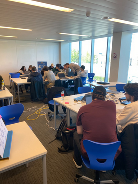
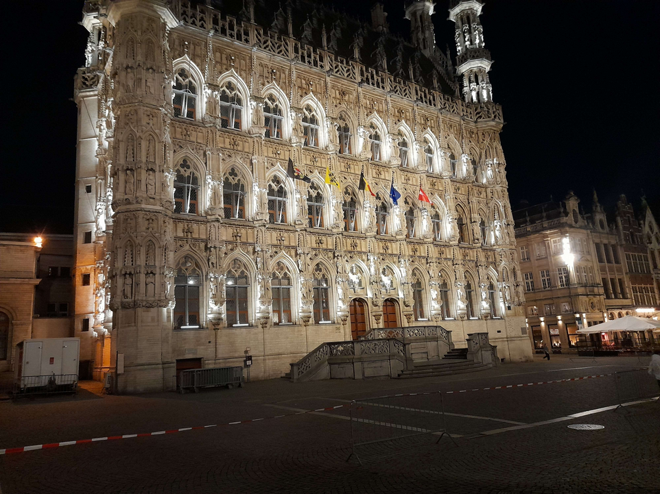

Tuesday - 18/4
Wednesday - 19/4
On Wednesday, we started the day with a discussion with our teachers about the progress of our project. Each group had its own meeting, where we shared our ideas and updates on our individual tasks. The discussion was insightful, and we received valuable feedback on how we could improve our output.
After the meetings, we spent the rest of the day working on our individual tasks. Our primary goal for the day was to finish the commands that filtered all the football data of the database and start working on visualisation. We divided ourselves into small groups and worked collaboratively to ensure that we made significant progress by the end of the day.
As the day progressed, my group encountered some challenges that we had to overcome, but we managed to solve them by using teamwork and problem-solving skills. By the end of the day, we were pleased with the progress we had made, and we had a small discussion within the group about the plan for the following day.
Later in the evening, I decided to visit the old market area of the city together with the other Howest students. We walked around and explored some of the cafes and tried some delicious local cuisine. We also had some beer, which was the perfect way to relax and unwind after a busy day.
We didn't stay out too late because we wanted to be fresh and ready for the project the next day.
 Written By Victor BarraThursday - 17/4
Friday - 18/4
We've received our daily dose of stress early, by waking up around 8h10. It's friday or 'present your project day' and thus arriving late was not part of the schedule. When making our beds and opening our blinds to let some light in, a realisation came to us as a beam of light. Victor, Liam and I had to hand in our bed sheets, clean up our mess or else we would face a fifty dollar fine. So on top of nearly being late, we also had to rush and clean our room.
Finally done cleaning, luggage packed, ready to go and give this presentation. Liam and I had to present at a later time, but Victor had to present around 9h10. Victor managed to make it in time and Liam and I used that extra time to rehearse for our project. While in different groups we still had somewhat the same outcome.
Preparing to present our project was the hardest part, as I was sweating bullets. This might be related to us running to catch the bus as if we were being chased by demons, but this presentation was also in front of the OHL team. The scope of the project, as mentioned before, was providing the OHL football club a visual 'app', so that they could use it to determine the status of players. My presentation went alright, it was not one of the best by far, but I have gotten a few compliments from the staff for my visualisation of their data.
There were a total of twenty one groups and only three groups were allowed to present their findings for the entire class with OHL staff included. Neither of us Howest students managed to get into the top three. To be honest, we tried our best to present something decent, but when I tell you that our projects didn't even scratch the surface of what these top three groups did. Their visualisation was on a different level and you couldn't compare it to ours. The OHL staff were so impressed with their findings that the best group received OHL football t-shirts. The rest received scratch off tickets and coupons.
By being in Belgium, we obviously had to grab some fries for lunch provided by IBM and UCLL. We have made some friends and enemies along the way, but overall this trip to Leuven was pretty amazing.
 Written By Denis Topallaj